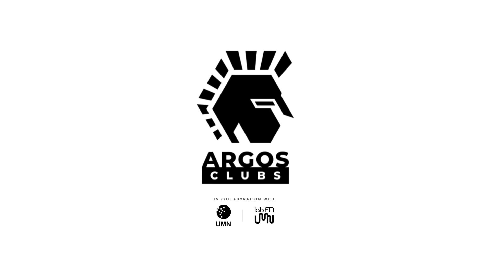

Sep 2026 – Present
Comms Member · Technical Workshop Support
Argos Club — Universitas Multimedia Nusantara
Provided technical guidance to 10+ participants during campus workshops on server virtualization and workflow automation. Assisted participants with Proxmox VE installation, basic user setup, and NetBird configuration during hands-on sessions. Directed and edited video documentation for workshop sessions.
